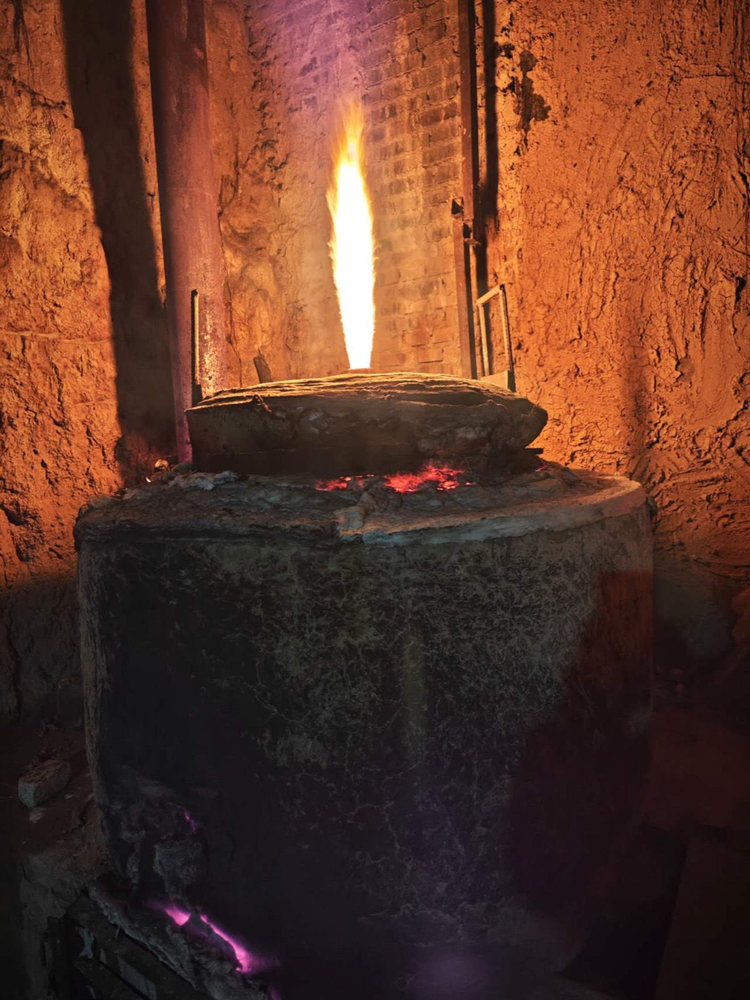
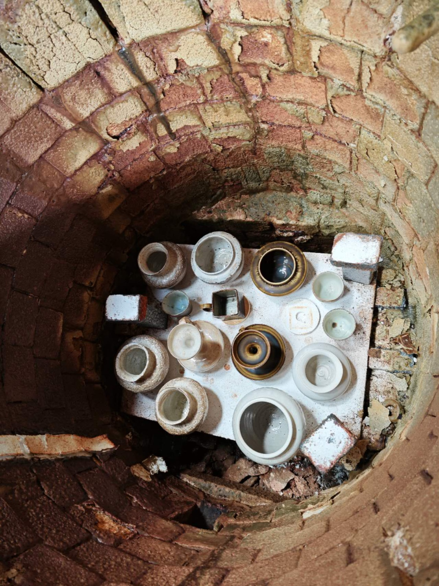
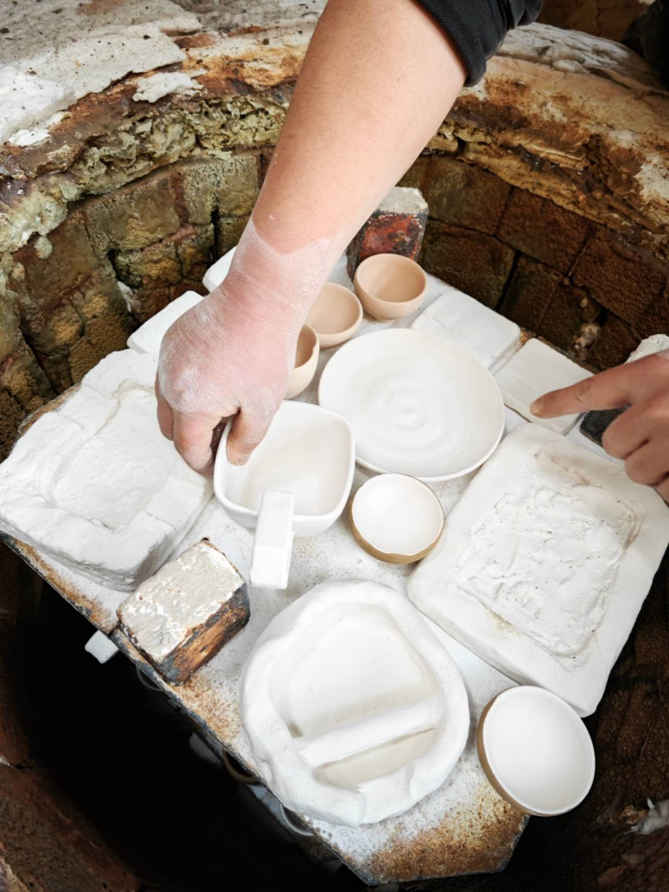
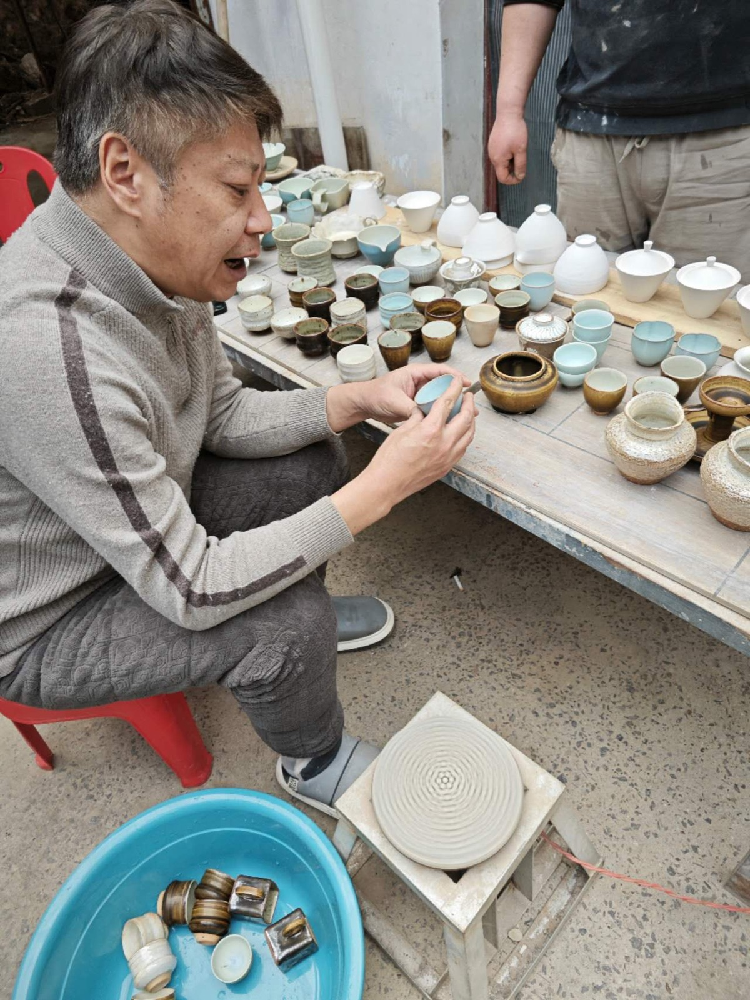
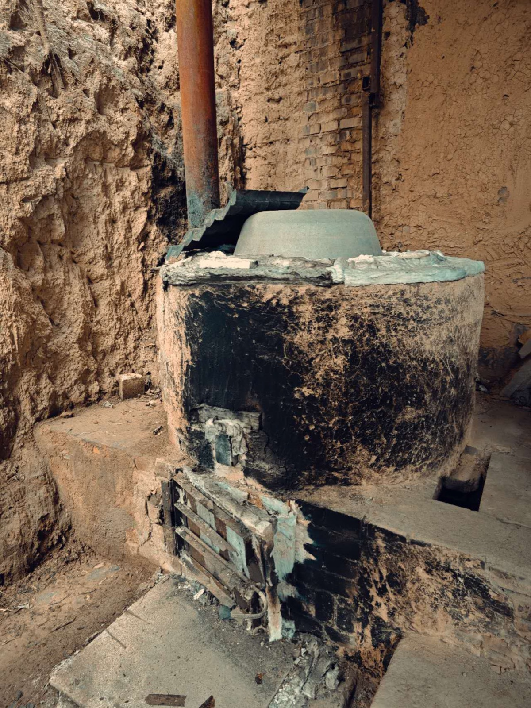
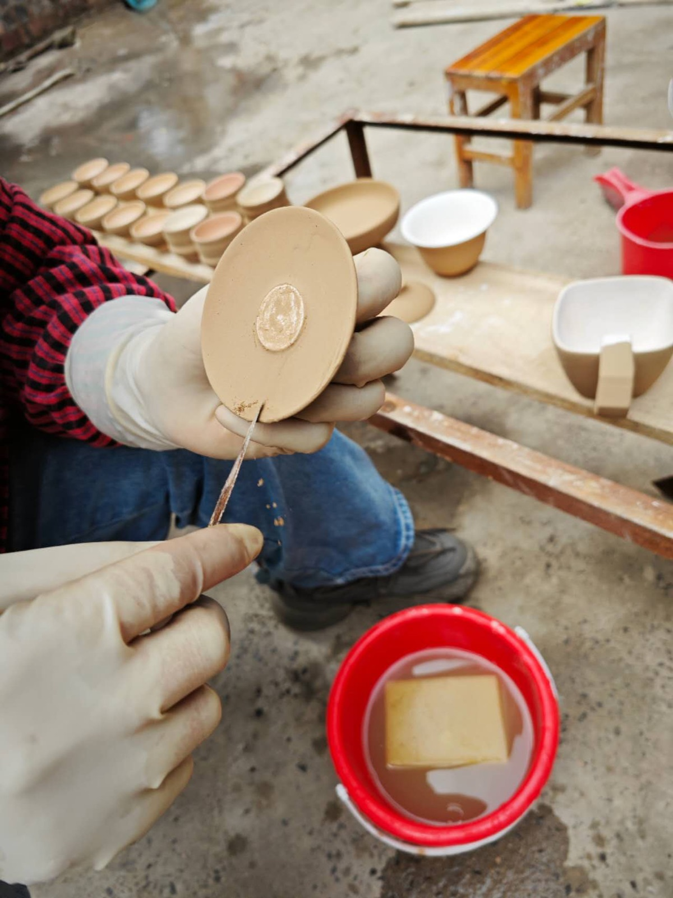
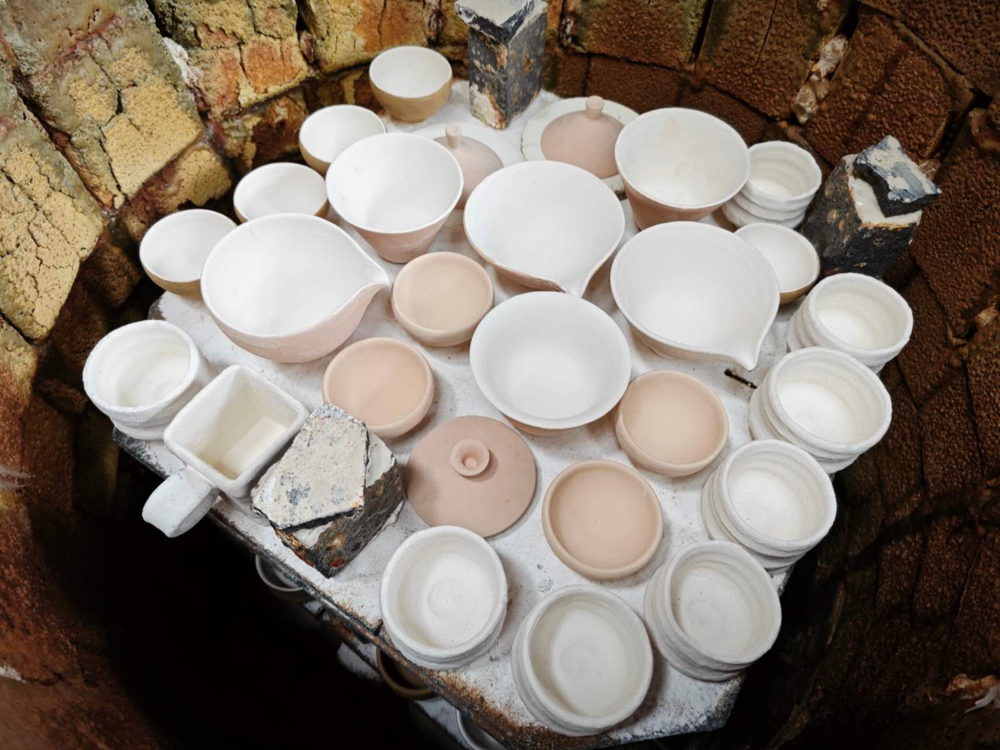
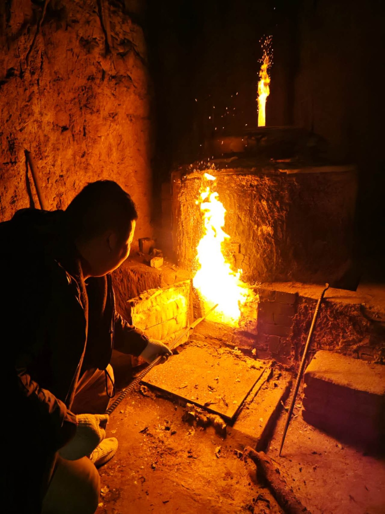
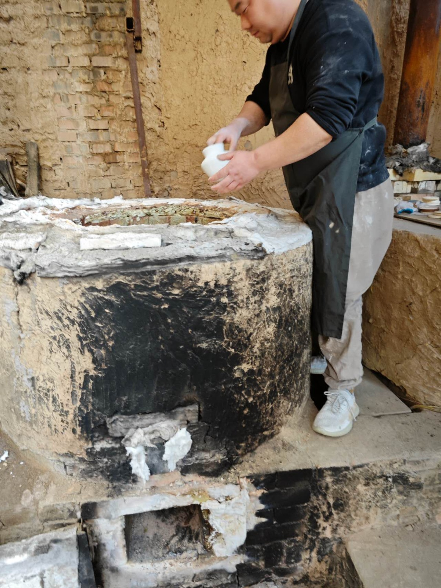

From Clay to Fire
The magic of wood-firing: you never see the fire, yet its marks are everywhere.
The Clay
Local clay — its iron and grit set the piece's color and character.
Throwing
Hand-formed, bearing the marks no machine can copy.
Drying
Dried in the shade — rushing it, the fire will not forgive.
Loading
Placed along the fire's path — position foreshadows fate.
The Fire
Three days of feeding wood, temperature and airflow painting inside.
The Opening
Ash settles into glaze — the opening reveals the answer, only once.
Wood-firing has no "perfect" — only "just right."
Understanding Wood-Firing
To understand each piece, first understand the fire.
What Is Wood-Firing
Wood-firing is an ancient method fueled by wood. Ash from the burning wood drifts onto the clay and melts into a natural glaze at high temperature — no glaze applied, yet a glaze forms.
Ash Glaze
Metal oxides in the wood ash melt at 1200–1400°C and settle on the clay as a thin glaze. More ash means a richer glaze; less ash, a glaze thin as a cicada's wing.
Fire Marks
Where the flame licks the piece directly, it leaves fire marks — scorched spots, flashes, glaze tears. This is the fire's signature, which no machine can copy.
Kiln Transformation
Temperature, the oxidation/reduction atmosphere, and ash meet by chance inside the kiln to create unrepeatable transformations. Even in the same firing, every piece glazes differently — that is the charm.
Why One of a Kind
Kiln position, heat, and airflow — the slightest difference sends two pieces down different fates. Pieces near the firebox take heavy ash; those deeper in the kiln are only softly touched. Every piece is therefore one of a kind.
How to Care
Wood-fired teaware seasons with use: soak before first use, wash and air-dry after each use, and avoid sudden temperature changes or soaking in detergent. The subtle pores and fire marks are proof it breathes.
Three Days, One Dialogue with Fire
Clay, throwing, loading, fire, opening — real wood-firing, on record.








All real, unposed records of the wood-firing process.
Why It Is So Rare
Fire has no script. Every log changes its path — you can never repeat the last firing.
The success rate is low — what survives is what the fire chose.
Where the ash lands, how thick — all by chance. That uncertainty is the charm.